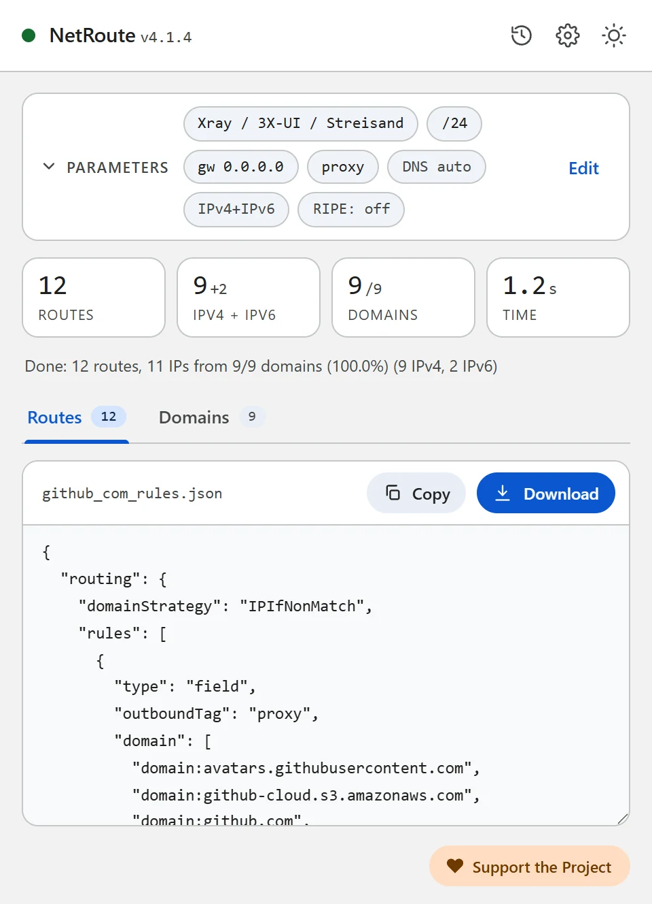
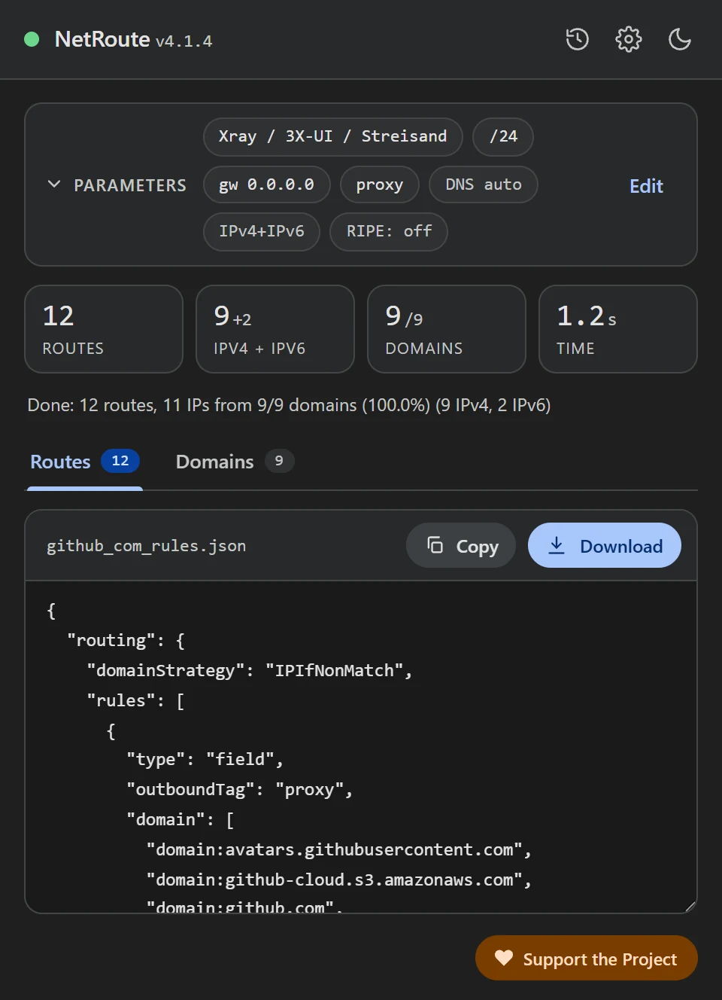

从任意网站生成 Xray 路由规则：Xray-core、3X-UI、v2rayN
更新于 · NetRoute 版本 4.1.3
Xray 依据 routing.rules 转发连接：域名和地址的列表加上一个 outbound 的 tag。NetRoute 可从网站生成两种变体的此类规则：一段 Xray-core 配置片段 — 同样适用于以 JSON 形式编辑 Xray 配置的 3X-UI 面板 — 以及一个用于向 v2rayN 导入规则的文件。
文件内容
「Xray / 3X-UI / Streisand」格式是带有 routing 部分的 Xray-core 配置片段。域名和网段是两条规则，各有自己的列表，共用一个 outboundTag：
{
"routing": {
"domainStrategy": "IPIfNonMatch",
"rules": [
{ "type": "field", "outboundTag": "proxy", "domain": ["domain:github.com", "domain:githubusercontent.com"] },
{ "type": "field", "outboundTag": "proxy", "ip": ["140.82.112.0/20", "185.199.108.0/22", "2606:50c0::/32"] }
]
}
}domain:name— 按 Xray 文档，表示该域名本身及其子域名。列表已折叠：当同时找到api.github.com和github.com时，只保留github.com；www.已去掉。扫描到的所有域名都包含在内，包括未能解析出 IP 的域名。ip— CIDR 形式的地址；即 NetRoute 为路由器输出路由时所用的同一批聚合网段，IPv4 和 IPv6。outboundTag— 来自 NetRoute 中 「网络设备」 字段的 outbound 的 tag；默认为proxy。domainStrategy: IPIfNonMatch— 按 Xray 文档，只有在没有规则按名称匹配时才把域名解析为地址；Xray 自身的默认值是AsIs，不做解析。
「v2rayN (rules import)」格式是一个规则数组，形式与 v2rayN 从剪贴板或文件导入时的一致（同 v2rayN 作者的 v2rayCustomRoutingList 仓库）：
[
{ "port": "", "outboundTag": "proxy", "domain": ["domain:github.com", "domain:githubusercontent.com"], "enabled": true, "remarks": "NetRoute github.com domains" },
{ "port": "", "outboundTag": "proxy", "ip": ["140.82.112.0/20", "185.199.108.0/22", "2606:50c0::/32"], "enabled": true, "remarks": "NetRoute github.com networks" }
]

准备工作
- 已配置 outbound 且知道其 tag 的 Xray-core — 在电脑、服务器上或 3X-UI 面板中
- 或适用于 Windows、Linux 或 macOS 的 v2rayN — 带有 Xray 和 sing-box 内核的客户端
- Chrome 中已安装 NetRoute 扩展
步骤 1. 在 NetRoute 中生成规则
- 在 Chrome 中打开目标网站并刷新页面，让扩展的嗅探器看到后台请求
- 启动 NetRoute
- 在 「目标系统」 的「代理客户端」分组中，为 Xray-core 配置选择 Xray / 3X-UI / Streisand，或为导入 v2rayN 选择 v2rayN (rules import)
- 在 「网络设备」 字段中输入你的 outbound 的 tag — 占位提示显示默认值
proxy。「网关 IP」 字段不影响这些格式 - 点击 「分析网站」
- 在 「域名列表」 标签页中取消勾选不需要的项 — 规则会立即更新
- 点击 「下载」：文件以网站命名，例如
github_com_rules.json
步骤 2a. Xray-core：将规则插入配置
打开 Xray 的 config.json，将 rules 中的两个对象添加到 routing.rules 数组中、通用规则的上方。按 Xray 文档，规则自上而下检查，第一个匹配的生效；未匹配任何规则的连接从配置中的第一个 outbound 出站。确认 outboundTag 与你的代理 outbound 的 tag 一致，且 domainStrategy 在 routing 部分只设置一次。
重启 Xray。
步骤 2b. 3X-UI：Xray 设置中的规则
3X-UI 是面向 Xray-core 服务器的 Web 面板。按其文档，路由规则就是 Xray 规则，带有 domain、ip、port、network、protocol、inboundTag、sourceIP 匹配条件以及 outboundTag 或 balancerTag 目标；没有单独的逐条规则编辑器 — 你在 Xray Settings（Xray 设置）中编辑配置的 JSON，面板会自行重新加载 Xray。
- 在面板中打开 Xray Settings
- 在 JSON 中找到
routing.rules数组，并把 NetRoute 文件中的两个对象插入其开头 - 将所需 outbound 的 tag 填入
outboundTag— 例如 WARP 连接或另一台服务器，如果这些网站应走那条路径 - 保存 — 面板会重新加载 Xray
在服务器上，这条规则的含义是：客户端发往这些域名和网段的流量由服务器发送到指定的 outbound，其余流量按规则列表后面的配置处理。
步骤 2c. v2rayN：导入规则
对于 v2rayN，在 NetRoute 中选择 v2rayN (rules import) 格式。需要参照的 v2rayN 界面文字如下：
- 打开下载的文件，将其内容复制到剪贴板
- 在 v2rayN 中打开 Routing → Routing Setting
- 选择 Import Rules From Clipboard（还有 Import Rules From File 和 Import Rules From Subscription URL）
- 对于提问 “Do you want to append rules? Choose yes to append, no to replace.”（是否追加规则？选 yes 追加，选 no 替换），回答 Yes 以将规则添加到现有规则中
- 检查这些规则所在的规则集已被标记为激活（Set as active rule）
在 v2rayN 的规则编辑器中，同样的列表出现在 Domain 和 IP or IP CIDR 字段中；条目语法与 Xray 相同，v2rayN 的 wiki 也为此指向 Xray 文档。
步骤 3. 检查
打开网站 — 它应通过规则中 tag 对应的 outbound 出站，其他网站与之前一样。如果网站打不开或绕过了代理，请查看常见问题。
常见问题
规则不生效
规则自上而下检查，第一个匹配的生效 — 如果上方的某条规则已经接管了这部分流量（例如通用的 geosite 规则），NetRoute 的规则就永远轮不到。请把 NetRoute 的规则上移。
编辑后 Xray 无法启动
检查 JSON：多余的逗号或第二个 routing 部分都会破坏配置。只需插入 rules 数组中的对象，而不是整个文件。
找不到 tag
outboundTag 必须与某个现有 outbound 的 tag 逐字一致。在 NetRoute 中，tag 在扫描前于 「网络设备」 字段中设置。
Streisand
Streisand 是适用于 iOS、macOS 和 visionOS 的客户端，支持基于规则的代理设置（其 App Store 描述中的“Rule-based Proxy Setup”）。如何向其中添加自己的规则，请参阅应用的文档；NetRoute 文件中的域名和网段列表适合此用途。
一个文件包含多个网站
点击分析按钮旁的 「URL 列表」 并粘贴网站列表 — NetRoute 会为所有网站生成一组规则，文件名为 bulk_N_rules.json。
DNS 与泄漏
Xray 中的域名规则与目标名称进行匹配；名称如何解析、在哪里解析由你配置中的 domainStrategy 和 dns 部分决定 — NetRoute 的规则不会改变它们。浏览器的查询发往其自身配置的 DNS：在 Chrome 中关闭「使用安全 DNS」或将其指向你信任的解析器，否则 Chrome 会绕过客户端解析名称。
检查：开启客户端后，dnsleaktest.com 不应显示运营商的解析器。
配置文件示例
可直接编辑的模板。将示例中的域名和网段替换为 NetRoute 为目标网站生成的输出。
xray-routing.json— 带有routing部分的 Xray-core 配置片段；旁边的v2rayn-rules.json用于导入 v2rayN
提示：文本格式下载时带有注释头。在 NetRoute 选项中取消勾选 「在导出文件中包含注释」 即可只保留规则；JSON 格式不含注释。
官方文档
- Xray：Routing — domainStrategy、规则顺序、domain 和 ip 的形式 (zh)
- 3X-UI — README 与面板文档
- 3X-UI：Outbounds & Routing
- v2rayN：自定义路由规则说明 (zh)
- v2rayN：用于导入的规则列表格式
相关指南
- Keenetic — 通过
.bat文件上传路由 - MikroTik — 将
.rsc脚本导入 RouterOS - WireGuard — 通过
AllowedIPs分流 - Linux —
ip routeshell 脚本 - OpenVPN — 客户端配置中的
route指令 - sing-box / Hiddify — 用于 sing-box 和 Hiddify 的 rule-set
- Happ — 以 happ://routing 链接形式提供的路由配置文件
- AmneziaVPN — 用于分流的网站列表